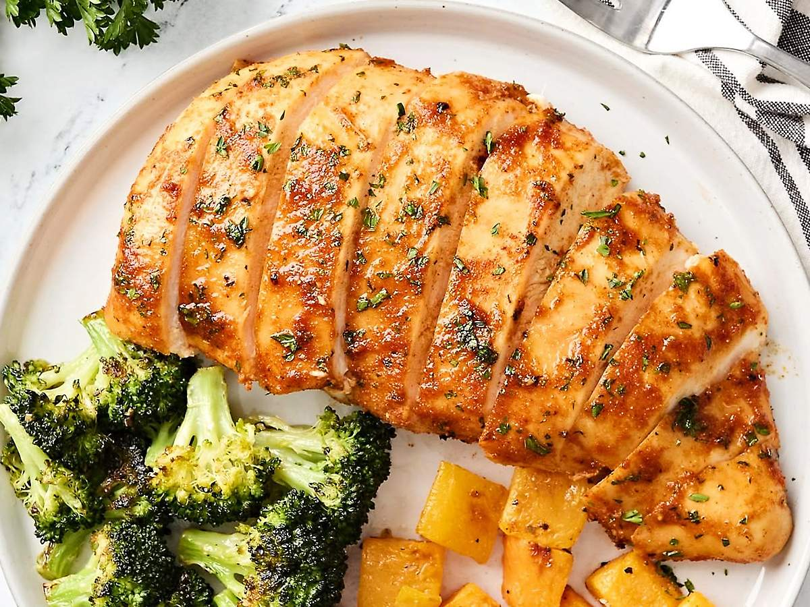

Uma cozinha pequena,
uma mesa grande.
A Comida da Casa nasceu de uma panela de feijão e da vizinhança batendo na porta na hora do almoço. O tamanho mudou; o cuidado, não.
Antes da placa, veio o cheiro.
Não havia cardápio nem fachada. Só uma cozinha aberta para os vizinhos e a certeza de que comida feita com atenção junta gente. Quem provava, voltava — e trazia mais alguém.
Quando a casa virou restaurante, a regra continuou simples: servir o que a gente comeria. Prato bem servido, tempero de verdade e preço que cabe no dia a dia.

Feijão de véspera
O feijão descansa no tempero antes de ir ao fogo. É o que dá aquele gosto de comida de casa.
Carne sem pressa
Panela baixa por três horas. A carne desmancha no garfo e o caldo engrossa naturalmente.
Entrega cuidada
Embalagem térmica e molho separado quando faz diferença. A comida chega como saiu daqui.
Preço honesto
Porção bem servida e preço de almoço de bairro. Sem taxa escondida na conta.
“A gente cozinha como se fosse para a própria família.”
É o que está escrito na parede da cozinha — e o que vale para cada marmita que sai daqui.